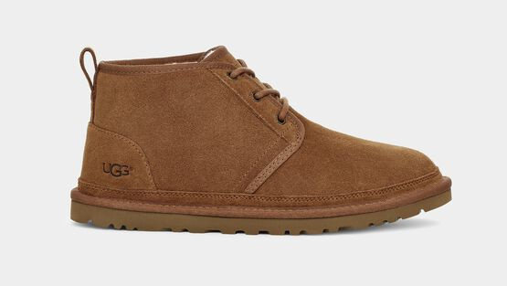
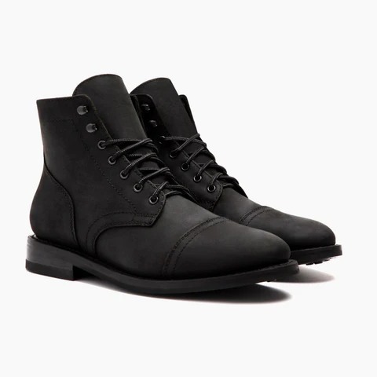

The Neumel, one of UGGs most iconic heritage chukka, is made with premium materials and styled to perfection. Created from rich suede, UGGpure™ wool, and durable Treadlite, this shoe offer hybrid style, indoor and outdoor, winter and even summer. Neumel was created in hops of empowering and educating women in the workplace. Through this shoe, you can make a change to your wardrobe and the world.

| Length | Size | Width Size B or C | Width Size D | Width Size EE or EEE |
|---|---|---|---|---|
| 9 1/4" | 6 | 3 5/16" | 3 1/2" | 3 11/16" |
| 9 5//8" | 7 | 3 3/8" | 3 5/8" | 3 3/4" |
| 9 15/16" | 8 | 3 1/2" | 3 3/4" | 3 15/16" |
| 10 1/4" | 9 | 3 5/8" | 3 15/16" | 4 1/8" |
| 10 9/16" | 10 | 3 3/4" | 4" | 4 3/16" |
| 10 15/16" | 11 | 3 15/16" | 4 1/8" | 4 5/16" |
| 11 1/4" | 12 | 4" | 4 5/16" | 4 3/8" |
| 11 9/16" | 13 | 4 1/8" | 4 5/16" | 4 5/8" |
Boots built for the winter and for men who wears their boots hard. The Captain was custom made to look fantastic even after years of hard wear and minimal care. Through the use of Rugged and Resilient Matte Leather from Tier 1 USA cattle hides, these boots are made to withstand any weather. With these, you can go the extra mile without caution.

| Length | Size | Width Size B or C | Width Size D | Width Size EE or EEE |
|---|---|---|---|---|
| 9 1/4" | 6 | 3 5/16" | 3 1/2" | 3 11/16" |
| 9 5//8" | 7 | 3 3/8" | 3 5/8" | 3 3/4" |
| 9 15/16" | 8 | 3 1/2" | 3 3/4" | 3 15/16" |
| 10 1/4" | 9 | 3 5/8" | 3 15/16" | 4 1/8" |
| 10 9/16" | 10 | 3 3/4" | 4" | 4 3/16" |
| 10 15/16" | 11 | 3 15/16" | 4 1/8" | 4 5/16" |
| 11 1/4" | 12 | 4" | 4 5/16" | 4 3/8" |
| 11 9/16" | 13 | 4 1/8" | 4 5/16" | 4 5/8" |
| 12 3/16" | 14 | 4.2" | 4.5" | 4.9" |